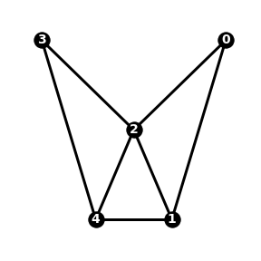
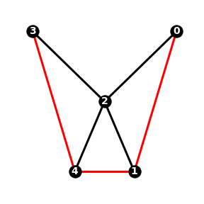
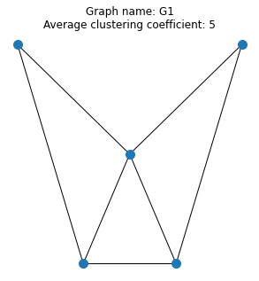

NSCI0007 Exam¶
Exam Start: N/A
Exam End: N/A
Instructions¶
At the exam end time, a copy of the exam folder
NSCI0007_EXAMwill be automatically taken for marking. Only files in this folder will be marked.Enter your answers in the file
answers.ipynbin the exam folder.Any changes made to files made after the end time will not be marked.
This exam is open book. Candidates may refer to course notes, tutorials and any online materials.
Candidates may not confer with any other person during the exam period.
Introduction¶
A graph is a collection of nodes connected by edges. The graph \(G_1\) below has 5 nodes and 7 edges:

The adjacency matrix of a graph with \(n\) nodes is an \(n\) by \(n\) array, where the element in position \(i, j\) is 1 if node \(i\) is connected to node \(j\) by an edge, otherwise 0. The adjacency matrix of the graph \(G_1\) is:
In Python, this can be represented as a numpy array:
import numpy as np
G_1 = np.array([[0, 1, 1, 0, 0],
[1, 0, 1, 0, 1],
[1, 1, 0, 1, 1],
[0, 0, 1, 0, 1],
[0, 1, 1, 1, 0]])
Question 1 [4]¶
The neighbours of a node \(i\) are the nodes directly connected to node \(i\) by an edge. For example, in graph \(G_1\) the neighbours of node 0 are nodes 1 and 2.
Write a function neighbours(A, i) which, given an adjacency matrix A and node index i returns a list of neighbours of node i.
Test it with the code below:
import numpy as np
G_1 = np.array([[0, 1, 1, 0, 0],
[1, 0, 1, 0, 1],
[1, 1, 0, 1, 1],
[0, 0, 1, 0, 1],
[0, 1, 1, 1, 0]])
neighbours(G_1, 0)
[1, 2] # or [2, 1]
Question 2 [5]¶
The clustering coefficient of a node measures how densely connected the node’s neighbours are. If the node has fewer than 2 neighbours then its clustering coefficient is zero, otherwise it is defined as follows:
where \(n\) is the number of neighbouring nodes and \(m\) is the number of edges between neighbouring nodes.
In \(G_1\), node 2 has 4 neighbours connected by 3 edges (coloured red in the figure below), so \(\gamma(2) = 3 / (4^2 - 4) = 3/12 = 1/4\).

Write a function clustering_coefficient(A, i) which returns the clustering coefficient of node i, and test it using the code below:
clustering_coefficient(G_1, 2)
0.25
Question 3 [5]¶
A path is a sequence of nodes, where each node is connected to the next by an edge and no node is repeated. For example [0, 2, 1, 4] is a path in the graph \(G_1\), but [0, 1, 2, 0] and [0, 3, 4] are not.
Given a list nodes and graph with adjacency matrix A, write a function is_path(A, nodes) which returns True if nodes is a path in the graph, and otherwise returns False. Test your function with the three lists [0, 2, 1, 4], [0, 1, 2, 0] and [0, 3, 4].
Question 4 [4]¶
The average clustering coefficient of a graph is defined as the sum of the clustering coefficients of all nodes in the graph, divided by the number of nodes in the graph.
Write a function average_clustering_coefficient(A) and test the function against the graph \(G_1\).
Question 5 [4]¶
The Python library networkx can be used to analyse and plot graphs. Import the library, and use it to create a graph of \(G_1\). Plot the graph using the function networkx.draw.
https://networkx.org/documentation/networkx-1.7/tutorial/tutorial.html
Question 6 [8]¶
Each of the three files graphXX.txt contains the definition of a graph. Each file is structured as follows:
graph name
number of nodes
The adjacency matrix, with one line per row
Write a script which reads the data from each file and generates a figure containing a plot of the graph annotated with the name and average clustering coefficient. Your three plots should look similar to the example below.
